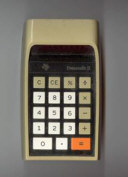

Fixing an Aging LCD
Calculators aren't designed to last forever, and often the first thing to go on an aging device is the LCD (liquid crystal display). The specific part causing many display issues is the ribbon cable which connects the main PCB (printed circuit board) to the display PCB. The glue holding down the cable dries out over the decades and begins to shift or come off.


This issue may present itself differently depending on the display type, ranging from missing, weak or always active pixels or rows of pixels on a dot matrix display, to missing, weak, always active, or scrambled segments on a segmented display. Fortunately, this issue is quite simple to fix. First you will have to open up the calculator. This varies greatly between calculators, but look carefully for screws to remove or tabs to jam a tool in and release.

Once you have it open, look for the ribbon cable. Generally all you have to do is hold some hot metal down on the cable where it contacts the main PCB. This can be done with the tip of a hot glue gun, which is what I do. You may have to hold it down for a while or move it back and forth, and it may take multiple attempts. Be careful not to damage the surrounding components.


Return to top
Backlighting a TI-34 MultiView
After watching Posy's series on LCDs, I decided to make a backlit scientific calculator. I chose one still produced because of the chance of breaking it in the process, and one with an oversized boxy housing because I didn't know how much space I would need inside: the TI-34 MultiView.

Mine is date code L-0419 B. The disassembly on this one was pretty simple, just remove the 6 outer screws with a small phillips head and pry open the clips. As I expected, there was plenty of room around the display.


I removed this white foam material attaching the LCD to the back of the PCB, in addition to the reflective film on the back of the display, which would make it transparent and allow me to install lights behind it.


There was another, somewhat sticky layer under the reflective film which i scratched a bit and decided to remove completely. I'm not sure in hindsight if this was the best choice but I believe the irregularity helped later with light diffusion.


I decided to put in some white cardstock backing to cover the PCB so the view of the LCD would have a uniform background and make it easier to read.


Now for the actual lighting part. I used these pre-wired SMD LEDs from Amazon. It probably depends on the model, but I needed them to be very small. I hooked them up to a battery pack I had and tried them in a few different locations around the display to see what looked the best.


Eventually I decided to use three LEDs, one in the center on the top, and one in each of the bottom corners. Now to wire them up to use the calculator's own battery power. I soldered each of the blue LED wires to the B- contact on the display PCB, and the red LED wires to the B+ contact. Make sure to keep the wires already connected in place and to use the battery contacts, not the solar contacts (remember, we want this to work in the dark).


At this point I decided that the light was two concentrated in three spots, so I used radiating blobs of hot glue to try to diffuse it more. There's probably a much better way to do this.


Finally, I had to install a switch to turn the light on and off. I'm not sure if there is any simple way to have the backlight automatically turn on and off with the rest of the calculator, but the best I could do with my knowledge at this point was to install a button at the top of the housing. I soldered the button between the B- connection and the blue LED wires. It wasn't pretty, but it's stayed together surprisingly well. I used the hot tip of the soldering iron to melt a hole in the plastic and glued in the connected button. It may take a few tries to get everything in place and close up the calculator. Patience is a virtue. I promise it looks better in person, but I will make another one soon now that I've learned from my mistakes.


01-14-23
Return to top
A Continuation of "Calculator Forensics"
Mike Sebastian's Calculator Forensics project aims to determine the similarities between calculator chips based on the result given when "arcsin (arccos (arctan (tan (cos (sin (9) ) ) ) ) )" is calculated. Here is a table of the results I've gotten from my own collection which align with his table:
| Result | Calculator Model | Date Code |
|---|---|---|
| 9.0000278593 | TI-30 SLR+ | RCI 12 89 |
| 8.99999864268 | Explorer Plus | D-0902 B |
| 9.000003512065 | TI-34 II | (missing, 1999-2004) |
| 9.00000229461 | TI-36X Solar | N-0601 B |
| 9.00000229461 | TI-36X Solar | N-0505 B |
| 9.000001077372 | TI-36X II | N-0403 D |
| 8.999999007884 | TI-60X | RCI 46 91 |
| 9.00044229369 | TI-65 | RCI 18 88 |
| 8.999999007884 | TI-68 | RCI 30 96 |
Unfortunately, his site has not been updated in over 15 years, so a lot of newer models are missing from the table. Here is a table of my results which are not present on his table:
| Result | Calculator Model | Date Code |
|---|---|---|
| 9.0000000304418 | TI-30Xa | L-0521 O |
| 9.0000000304418 | TI-30X IIS | L-0418 P |
| 9.000001077372 | TI-34 MultiView | L-0419 B |
| 9.000001077372 | TI-36X Pro | L-1021 E |
The TI-34 MultiView and TI-36X Pro give the same result as the TI-36X II and TI-30XS MultiView in Mike's table. However, the TI-30Xa and TI-30X IIS in his table give different results from mine. I believe there was a change to these models around 2015 which accounts for these results. 01-16-23
Return to top
The "Logarithm Bug" and Changes to Standard Models in 2015
Xpanded series calculators (including the 30, 35, and 36 series models) have had the  "logarithm bug" present since their introduction in 1991, which causes rare incorrect results when calculating certain logarithms and other functions. In addition, all of these models give the same calculator forensics result and have the same accuracy of 12 digits. The bug was even carried over onto the II-line series in 1999, but quickly amended. Despite this, the bug persisted inside the last produced Xpanded model, the TI-30Xa, even while its display and housing were altered. Finally, in 2015, the bug was fixed, and the calculating accuracy (now 14 digits) and forensics result changed alongside it. Even though the bug was not present on it anymore, the last produced II-line model, the TI-30X IIS, also had its forensics result changed at the same time.
01-24-23Return to top
Design Variations of School AOS Calculators
There are 4 models of AOS calculators which used a similar series of housings from the late 1980s to early 2000s, the Math Explorer, the Explorer Plus, the TI-30Xa SE, and the TI-34. By scrolling through eBay listings, I've put together this chart to illustrate which of these models used which housing designs when. For image context, take a look at this page and this page.
| Model Name | Date Range | Housing Design | Bezel Design | Solar Panel Size | Location of TI Logo | Key Design | Location of Main Text on Keys |
|---|---|---|---|---|---|---|---|
| Math Explorer | Boxy | Smooth | Large | Bottom Left | Lower Bump | Bottom Left | |
| Math Explorer | 0790-1291 | Boxy | Smooth | Large | Right of Text | Lower Bump | Top Left |
| Math Explorer | 0791-0297 | Boxy | Smooth | Small | Right of Text | Lower Bump | Top Left |
| Math Explorer | 011294-160994 | Boxy | Bordered | Medium | Left of Text | Smooth | Top Left |
| Math Explorer | 0597-0107 | Round | Smooth | Small | Top Left | Round | Center |
| Explorer Plus | 070296-200596-200996-310796-240198 | Boxy | Bordered | Medium | Left of Text | Smooth | Center |
| Explorer Plus | 0197 | Boxy | Smooth | Small | Left of Text | Smooth | Center |
| Explorer Plus | 0998-0902 | Round | Smooth | Small | Top Left | Round | Center |
| TI-30Xa SE | 0495-0895 | Boxy | Smooth | Small | Left of Text | Smooth | Center |
| TI-30Xa SE | Round | Smooth | Small | Top Left | Round | Center | |
| TI-34 | 0889-1291 | Boxy | Grooved | Large | Right of Text | Lower Bump (Red) | Bottom Left |
| TI-34 | 0990-0491 | Boxy | Grooved | Large | Right of Text | Lower Bump (Blue) | Bottom Left |
| TI-34 | 0192-0892 | Boxy | Smooth | Small | Right of Text | Lower Bump (Blue) | Bottom Left |
| TI-34 | 0892-0397 | Boxy | Smooth | Small | Right of Text | Lower Bump (Red) | Bottom Left |
| TI-34 | 100294-100894-150494-180694-211294-221294-260695-310895-220196 | Boxy | Bordered | Medium | Left of Text | Smooth (Red) | Bottom Left |
| TI-34 | 0197 | Boxy | Smooth | Small | Left of Text | Smooth (Red) | Center |
| TI-34 | 0697-1102 | Round | Smooth | Small | Top Left | Round (Red, Modifier Colors Swapped) | Center |
01-18-23 - 01-20-23
Return to top
TI-30 SLR+ Design Missing From Datamath.org
The Datamath Calculator Museum is a wonderful website with images and descriptions of nearly every TI calculator ever made. However, there are a few minor designs they failed to list. One of them I own myself. Here is an excerpt from an email I sent:
You have five TI-30 Solar Plus calculators in your overview. One has the early solar design from the TI-30 SLR, the second has a later design with yellow colored text on the INV keys and an "embedded" display, the third is a prototype with a black bezel and no special coloring on INV keys, the fourth has a "window" covering the display and solar cells with a gray bezel but no special coloring on INV keys, and the last has a more "shallow" display with smaller solar cells and no special coloring on the INV keys.I purchased one calculator of this design, with date code RCI 12 89, placing it somewhere between type 3 and type 4.
However, while browsing these on eBay, I came across several calculators of another design you do not have listed. These have the "window" and the gray bezel from the fourth design, but with yellow text on the INV keys, known from the second design.
I am planning to buy one of these soon, but for now here are some images I found attached to the listings on eBay that could help solve this. I believe the date code seen here is RCI 14 89 but it is difficult to read.


 01-13-23
01-13-23Return to top
Automatic Power Down Times
Every TI calculator with batteries (including dual power models) has the Automatic Power Down (APD) feature which turns off the calculator on its own after a certain amount of time with no key presses. Turning it back on returns to the exact same state as when it shut off. How long is this time and how does it vary between models? Let's see. I did two trials each to see if it was consistent, and in a different mode too. It may be affected by battery condition.
| Calculator Model | Date Code | Trial 1 (±0:05) | Trial 2 (±0:05, in stat mode) |
|---|---|---|---|
| TI-15 | K-0207 | 4:30 | 4:30 (in problem solving mode) |
| TI-30Xa | L-0521 O | 5:05 | 5:05 |
| TI-30X IIS | L-0418 P | 5:10 | 5:10 |
| TI-34 II | missing, 1999-2004 | 5:15 | 5:15 |
| TI-34 MultiView | L-0419 B | 4:00 | 4:05 (with backlight on) |
| TI-36X II | N-0403 D | 4:45 | 4:45 |
| TI-36X Pro | L-1021 E | 3:55 | 3:55 |
| TI-60X | RCI 46 91 | 16:20 | 17:35 |
| TI-65 | RCI 18 88 | 21:20 | 21:20 |
| TI-68 | RCI 30 96 | 6:35 | 6:35 |
01-16-23 - 01-18-23
Return to top
Bugs on the TI-36X Pro
The TI-36X Pro has the most advanced operating system of any TI scientific calculator, and with these great capabilities come a few bugs. The first has been common knowledge for a while now, and the second I recently discovered myself.
First, the mixed fractions with pi bug. Press this key sequence in MathPrint mode. To prepare the calculator to produce the bug, convert a decimal to a mixed fraction using the > n/d <> U n/d function in the math menu. Then multiply pi by a squared decimal. Finally, hit the quick convert key (above enter) to convert it into an (incorrect) mixed fraction with pi in the numerator. This video has a good demonstration. This bug depends on the "smart" quick convert key.
For the second bug, understand that most characters on the calculator have three sizes, one for standard home screen use (5 by 7 pixels), one for use in small MathPrint boxes (5 by 5 pixels) and one for use in small text screens, like the mode and table menus (4 by 5 pixels). It generally works out fine, except when you use certain conversions, in particular ones using the W for watts and the J for joules, in a small MathPrint box, like in an exponent or a fraction.


This is present on my calculator (L-1021 E) and Critor's (L-0317 B). 01-13-23
Return to top
Self-Test and Reset Key Combinations
Many calculators have combinations of keys which can be pressed in order to perform special functions like resets and self-tests. These differ from model to model and there are likely many which are still unknown. TI doesn't give out self-test sequences in manuals so often they have to be figured out.
We will start with reset sequences, which, on calculators with batteries, usually consist of holding down two distant keys simultaneously. First, on modern EOS calculators (TI-10, TI-15, II line series, MultiView series), hold down the on and clear keys at the same time. This will display a "memory cleared" screen and reset all memory and settings.


On the MultiView series, if the clear key is pressed before and released after the on key, the message will be immediately cleared rather than requiring another keystroke to clear. On the TI-65 Technical Analyst, a keystroke programmable calculator from the 1980s, the calculator's full memory and settings can be cleared by first turning it off, then holding R/S as you turn it back on.

A pattern of segments will flash, and then it will return to normal operation.
I am only aware of two self-test functions on scientific calculators. The first is on solar-only models of the Xpanded series (TI-30X Solar, TI-30Xa Solar, TI-36X Solar). This test is performed by holding down the fraction, 1, 2, and 3 keys and pressing ON. Two display patterns alternate either automatically or by pressing any key.


The calculator returns to normal operation when ON is pressed again. I plan to eventually try this on the TI-30Xa SE.
Another self-test function exists on the MultiView series. It is performed with the sequence [2nd](reset)[2nd](insert)[on]. Some diagnostic information is displayed, and pressing different keys from this point will perform various tests. Read more about the specifics of this function here. I have logged some of my own results below.
It is very likely that a self-test function exists on the II line series, but it not been discovered. 01-14-23
Return to top
MultiView self test logs
How to access is described above
Using RownumberColumnnumber key codes
TI-36X Pro (L-1021 E)
11 92 11 13 91: displays JT5CW8-002 11/10 (point A)
from point A:
11 or 12 or 13 or 15 or 22 or 23: blanks screen, resumes normal operation except for direct input (modifiers & menus work, enter shows cursor)
14 or 21 or 32 or 33 or 34 or 35: displays MEMORY CLEARED, memory cleared, resumes normal operation
16 or 31 or 42 or 43 or 44 or 45: displays 2 rapidly alternating display tests, two screens of columns and sections of indicators, only 35+91 can be pressed to skip the test, otherwise continues for about 90 seconds, displays MEMORY CLEARED, memory cleared, resumes normal operation
24 or 41 or 52 or 53 or 54 or 55: (point B, direct to respective key index)
51 or 61 or 62 or 63 or 64 or 65 or 72 or 81 or 91 or 92 or 93 or 94 or 95: no immediately visible change (investigate for contrast changes)
71 or 82 or 83 or 84 or 85: scrolls through 6 display tests (point C)
After about 4 minutes displays MEMORY CLEARED, memory cleared, resumes normal operation
from point B:
11: 0F XX XXXX (point B, see note B)
12: 27 XX XXXX (point B, see note B)
13: 2F XX XXXX (point B, see note B)
14: 36 XX XXXX (point B, see note B)
15: 37 XX XXXX (point B, see note B)
16: 35 XX XXXX (point B, see note B)
21: 0E XX XXXX (point B, see note B)
22: 17 XX XXXX (point B, see note B)
23: 1F XX XXXX (point B, see note B)
24: 34 XX XXXX (point B, see note B)
31: 0D XX XXXX (point B, see note B)
32: 16 XX XXXX (point B, see note B)
33: 1E XX XXXX (point B, see note B)
34: 26 XX XXXX (point B, see note B)
35: 2E XX XXXX (point B, see note B)
41: 0C XX XXXX (point B, see note B)
42: 15 XX XXXX (point B, see note B)
43: 1D XX XXXX (point B, see note B)
44: 25 XX XXXX (point B, see note B)
45: 2D XX XXXX (point B, see note B)
51: 0B XX XXXX (point B, see note B)
52: 14 XX XXXX (point B, see note B)
53: 1C XX XXXX (point B, see note B)
54: 24 XX XXXX (point B, see note B)
55: 2C XX XXXX (point B, see note B)
61: 0A XX XXXX (point B, see note B)
62: 13 XX XXXX (point B, see note B)
63: 1B XX XXXX (point B, see note B)
64: 23 XX XXXX (point B, see note B)
65: 2B XX XXXX (point B, see note B)
71: 09 XX XXXX (point B, see note B)
72: 12 XX XXXX (point B, see note B)
73: 1A XX XXXX (point B, see note B)
74: 22 XX XXXX (point B, see note B)
75: 2A XX XXXX (point B, see note B)
81: 08 XX XXXX (point B, see note B)
82: 11 XX XXXX (point B, see note B)
83: 19 XX XXXX (point B, see note B)
84: 21 XX XXXX (point B, see note B)
85: 29 XX XXXX (point B, see note B)
91: point A
92: 10 XX XXXX (point B, see note B)
93: 18 XX XXXX (point B, see note B)
94: 20 XX XXXX (point B, see note B)
95: 28 XX XXXX (point B, see note B)
After about 4 minutes displays MEMORY CLEARED, memory cleared, resumes normal operation
note B: first two characters give a two-character alphanumeric code for the key pressed, second two count the number of keys pressed (starting with 01, rolls over 99 to 00), third set of four seems to increment using some other counting system
Return to top